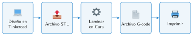
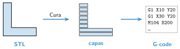

Preparar la impresión con Cura
🤔 Pienso5 min
Qué hago aquí: Piensa un momento y contesta con lo que ya sabes. No pasa nada si no lo sabes: es para empezar.
Tienes que explicar a un robot cómo hacer tu soporte con plastilina, capa a capa. ¿Qué le dirías?
✏️ Puedes responder escribiendo, con un dibujo o un esquema, o contándolo en voz alta.
📖 Leo y aprendo15 min
Qué hago aquí: Lee despacio, mira los dibujos y los ejemplos, y quédate con la idea clave del final.
La impresora no entiende un archivo STL. Solo sabe moverse, calentar y echar plástico. Un programa como Cura traduce la pieza a órdenes para la impresora.
Laminar es cortar la pieza en capas muy finas. Cura calcula el camino de la boquilla en cada capa. El resultado es un archivo G-code: una lista de órdenes para la impresora.


✏️ Hago25 min
Qué hago aquí: Haz las actividades en orden. Empieza siempre por las básicas.
Abre tu soporte en Cura. Pon la cara más grande sobre la cama.
Lamina con capa de 0,2 mm y relleno del 20 %. ¿Cuánto tarda? ¿Cuántos gramos gasta?
Cambia el relleno y completa la tabla.
| Relleno | Tiempo | Gramos |
|---|---|---|
| 20 % | ||
| 50 % |
Guarda el G-code con un buen nombre en tu carpeta.
Cambia la altura de capa a 0,1 mm. ¿Cuánto cambia el tiempo? ¿Por qué?
🚀 Amplío (si quieres saber más)
Qué hago aquí: ¿Has terminado? Lee la curiosidad o elige el reto. Es voluntario.
Mira la vista previa capa a capa. Busca el relleno y los soportes. Explica cómo es tu pieza por dentro.
✅ Compruebo5 min
Qué hago aquí: Contesta sin mirar la ficha y marca cómo lo llevas.